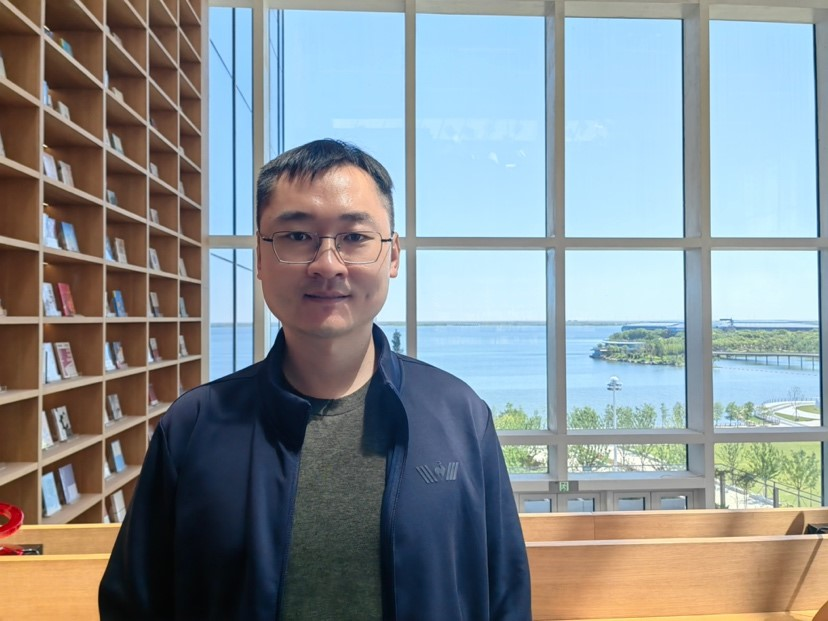

People / Principal investigator
Fan Zhang.
Professor & Doctoral Supervisor · Shanghai Ocean University

Principal investigator
Fan Zhang, PhD
Professor & Doctoral Supervisor
Fan Zhang studies fish population dynamics, fisheries stock assessment, and fisheries management. He joined Shanghai Ocean University in 2021 after completing his PhD in Integrative Biology at the University of Guelph.
f-zhang@shou.edu.cn
University profile (opens in a new tab)
ORCID (opens in a new tab)
ResearchGate (opens in a new tab)
Education
2011–2015
PhD, Integrative BiologyUniversity of Guelph, Canada
2009–2011
Master’s, Fisheries ResourcesOcean University of China
2005–2009
Bachelor’s, Marine Biological Resources & EnvironmentOcean University of China